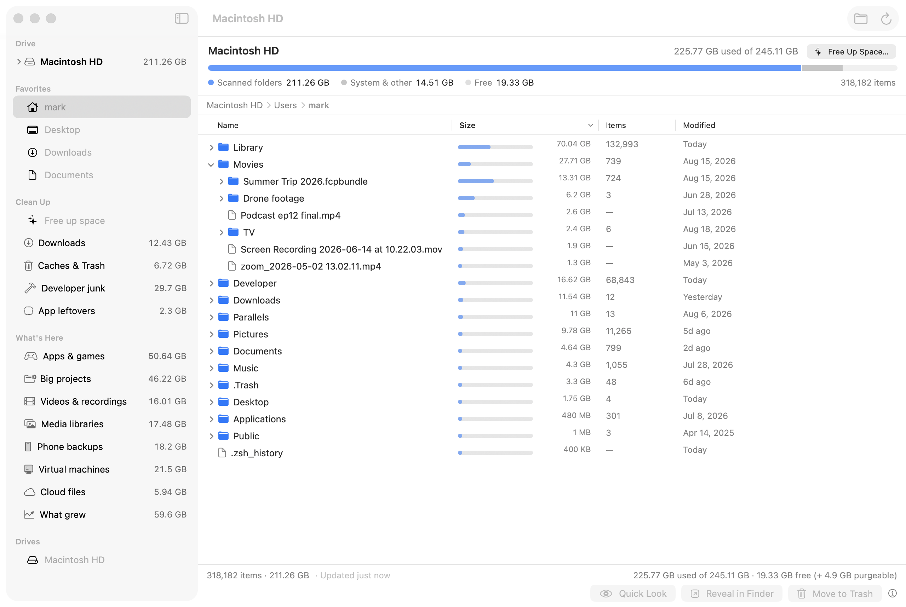
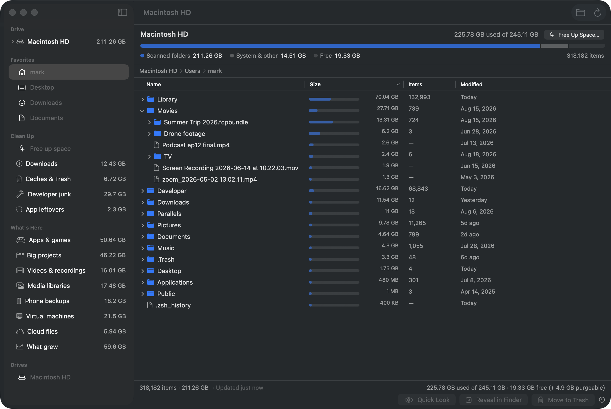
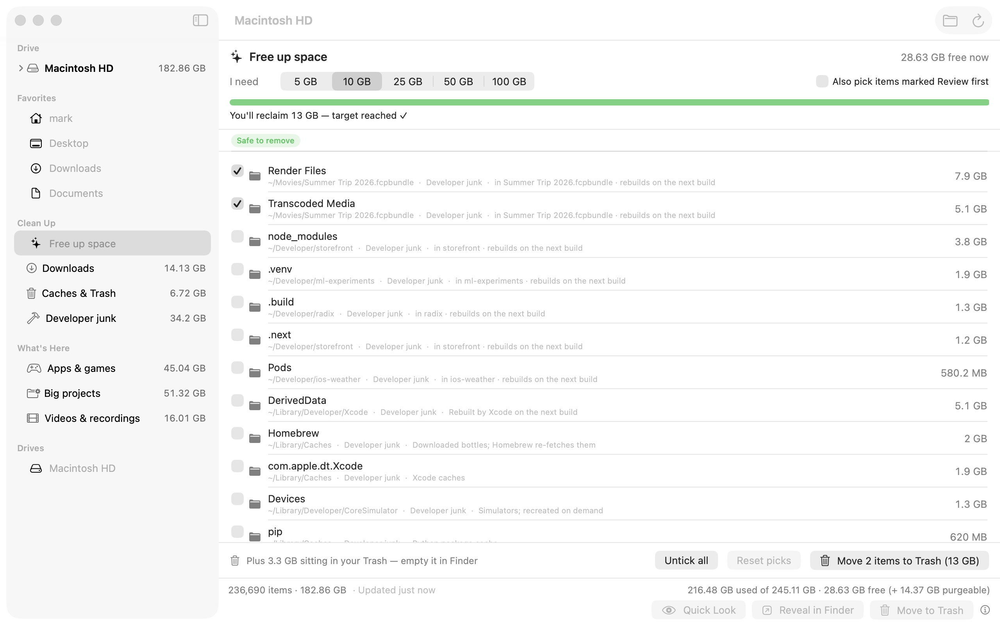
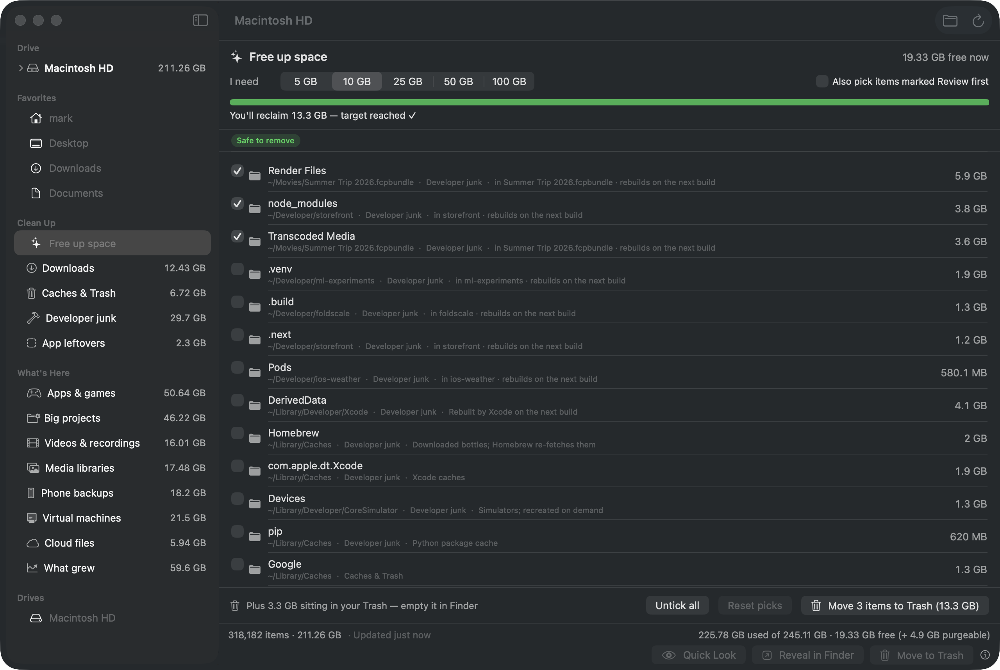
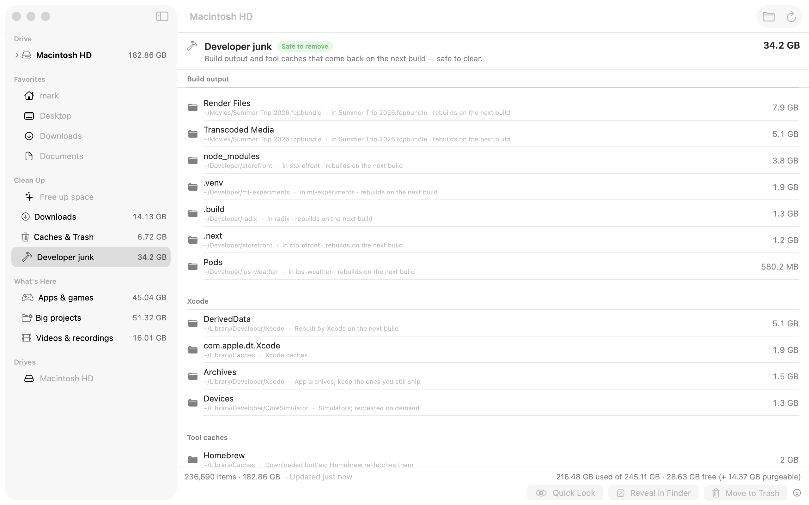

Foldscale is a free, open-source disk space analyzer for macOS. Everything sorted biggest-first at every level — and a Free up space button that knows what's safe to trash.
brew install --cask mikehoncho32/foldscale/foldscale

Other analyzers lead with a chart and hide the file list. Foldscale inverts that: the list is the product.
No treemap to decode. Folders you already know, with a size next to each one and the biggest on top at every depth. Drill down without losing scale.
Opens instantly from your last scan and refreshes in the background. The folder you click is re-checked on the spot. No “scanning…” wall.
Say how much you need. Foldscale pre-ticks the safest candidates to cover it — old installers, caches, build junk — you adjust, one confirmation.
Safe to removeReview first
Downloads, Caches & Trash, Developer junk, App leftovers, Apps & games, Big projects, Videos & recordings, Media libraries, Phone backups, Virtual machines, Cloud files, What grew — each with a GB total and a safety badge; empty ones hide.
Everything goes to the Trash — never a permanent delete. System folders refuse to be trashed. Foldscale never opens your files and never downloads cloud placeholders.
No analytics, no account, no telemetry. The only connection it makes is an optional once-a-day check with foldscale.com for a new version — no identifiers sent, off with one switch in Settings. Signed and notarized by Apple, MIT-licensed, and every line is on GitHub.
Pick a target. Foldscale ranks what it found by how safe it is to remove and ticks the safest until the target is covered.


Three steps. No account, no launcher, no background agent.
brew install --cask mikehoncho32/foldscale/foldscale — updates arrive with brew upgrade.
macOS hides parts of your own home folder (Mail, Messages, Safari data…) from apps unless you allow it. Without it, Foldscale still works — those folders just show as “not readable”.
It can only move items to the Trash, and it refuses to touch system folders. Nothing is gone until you empty the Trash yourself.
Only an update check. With your permission, Foldscale fetches a small file from foldscale.com once a day to see whether a newer version is out — no identifiers, no usage data, nothing about your files. Turn it off in Settings and check manually from the Foldscale menu instead. Scans are stored in a local cache in your Application Support folder and nowhere else.
No. Online-only placeholders show their real local footprint with a cloud badge; Foldscale reads metadata only and never opens file contents.
Yes, until 1.2.0. An unrelated Mac disk analyzer already used that name, so we renamed rather than share it. Same app, same code — only the name changed.
Yes — MIT-licensed, source on GitHub. If it helped you, a star on the repo helps others find it.
macOS 14 (Sonoma) or later on Apple silicon or Intel. A full scan of a 1 TB drive takes well under a minute.